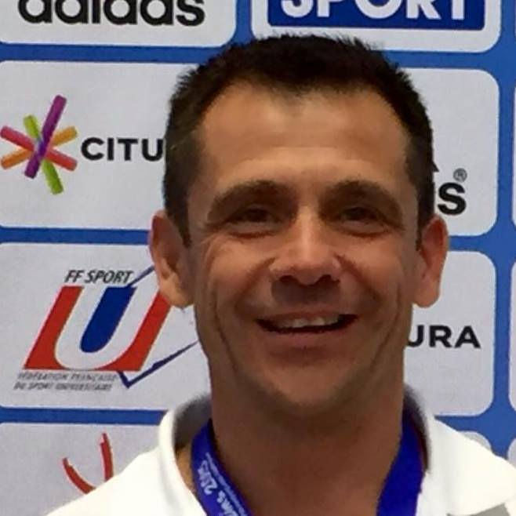

Ancien compétiteur de niveau national (Judo - 4e Dan) et International (Sambo - 4e Degré), professeur d'EPS à l'INSA de Lyon.
Entraineur de Judo (BEES 1e degré) et de Sambo (BEES 2e degré), préparateur mental (diplomé de l'université STAPS de Clermont Ferrand).
Médaille de Bronze Jeunesse et Sports.
Durant mes années de compétiteurs, j'ai eu la chance de beaucoup travailler sur les plans pysique, technique et tactique. Je ne le savais pas, mais avec du recul, il semble qu'il m'ait manqué le 4e élément de la performance pour franchir un cap, ceui de la préparation mentale.
Je l'ai découvert bien plus tard, grâce à différentes rencontres et échanges.
Ce manque m'a poussé à vouloir aider les autres, c'est pourquoi, j'ai décidé de me former en préparation mentale, afin de pouvoir apporter aux compétiteurs de tout niveau, des outils et techniques leurs permettant de se mettre dans les meilleurs conditions à la conquête de la performance.